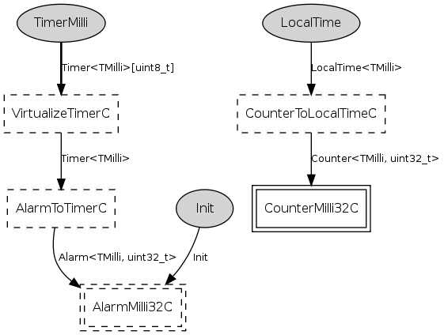

Component: tos.chips.msp430.timer.HilTimerMilliC
configuration HilTimerMilliC
HilTimerMilliC provides a parameterized interface to a virtualized
millisecond timer. TimerMilliC in tos/system/ uses this component to
allocate new timers.
- Author:
-
Cory Sharp <cssharp@eecs.berkeley.edu>
- See:
-
Please refer to TEP 102 for more information about this component and its
intended use.
Provides
interface
Timer<TMilli> as
TimerMilli[uint8_t]
Wiring
